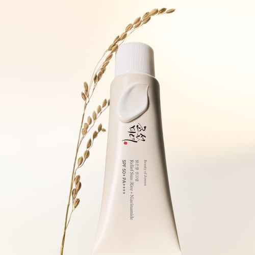

The SPF edit · Research checked November 28, 2026 · 8 min read
Korean Sunscreens on YesStyle: Which One Is Right for You?
Beauty of Joseon, SKIN1004 and ROUND LAB: three formulas compared by texture, hydration and the details that matter before you buy.
Read the sunscreen guide